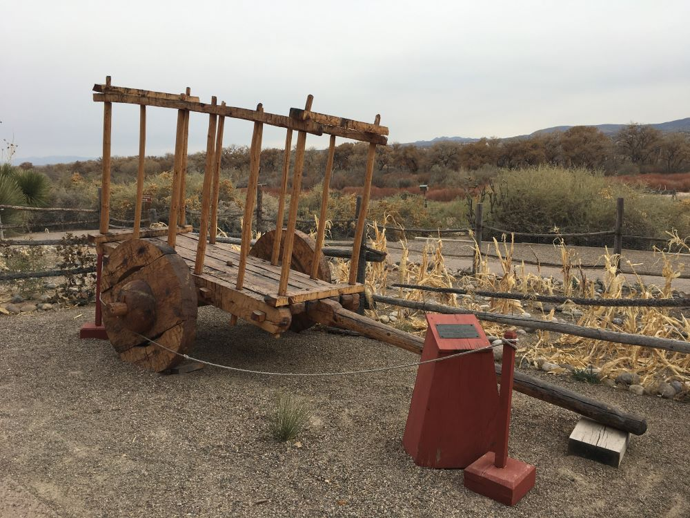
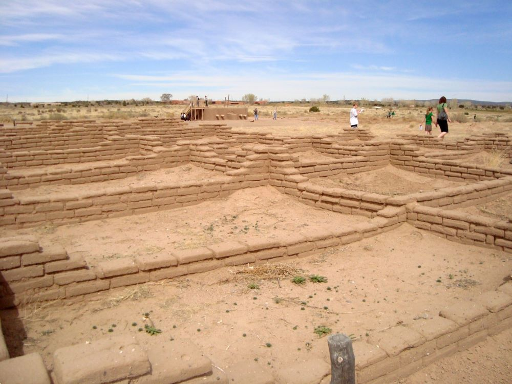

.JPG){kind=link}
Archaeological site preserving the remains of a 14th-century Pueblo village with a reconstructed kiva, mural fragments, and interpretive trails along the Rio Grande.
General Information
Closed Tuesdays, New Year's Day, Thanksgiving, and Christmas Day
Guided kiva tours daily at 11am and 2pm
Children 16 and under: Free
NM residents: Free first Sundays with ID
NM seniors (60+): Free on Wednesdays with ID
Free for NM foster families, disabled veterans, tribal members, and CulturePass holders
How to Get There
Take I-25 to Exit 242, head west on US-550 for 2 miles, then turn right onto Kuaua Road to reach the site.
Overview
Coronado Historic Site preserves the ruins of Kuaua Pueblo, a Tiwa-speaking village on the west bank of the Rio Grande at Bernalillo, north of Albuquerque. Kuaua, meaning "evergreen" in the Tiwa language, was built around 1300 CE and grew into a village of more than a thousand rooms, and in the 1930s archaeologists uncovered a square kiva whose walls were covered in layers of painted murals, some of the finest pre-contact Pueblo art found in North America. The site is named for Spanish explorer Francisco Vásquez de Coronado, who spent the winter of 1540 to 1541 in the area. Visitors come to walk the pueblo trail, descend into a reconstructed kiva, see mural reproductions and originals in the visitor center and enjoy riverside views of the Sandia Mountains.
Access
The site is in Bernalillo, about 20 miles north of downtown Albuquerque and 45 minutes south of Santa Fe. Take I-25 to exit 242 and follow US-550 west for about 2 miles, then turn right on Kuaua Road to the entrance. Almost all visitors arrive by car on paved roads, with free parking near the visitor center. The trail is short and mostly level, and the visitor center is wheelchair accessible. Because the site is close to the interstate, it makes an easy stop between Albuquerque and Santa Fe.
Seasons
The site is open year-round except for Tuesdays and major holidays, and spring and fall bring the most comfortable weather for walking the pueblo trail. Summer afternoons can be hot, and morning visits are best. Fall brings golden cottonwoods along the Rio Grande, and winter is cold but usually mild enough for a short visit. The kiva tours are offered on a daily schedule, so check the New Mexico Historic Sites website for times and for special events and Pueblo cultural programs.
Things to Do
Step Inside a Pueblo Kiva
Coronado Historic Site offers a rare chance to descend into a reconstructed Pueblo kiva on a guided tour. The experience helps visitors imagine the ceremonial life of the village and the setting where the murals were painted.
See the Kuaua Murals
The visitor center displays reproductions of the layered murals and original fragments in a gallery designed to interpret the Pueblo art tradition. The murals show figures, animals and symbols that are still studied by archaeologists and Pueblo communities.
Walk the Kuaua Pueblo Trail
A short interpretive trail winds through the excavated and partially reconstructed ruins of the pueblo, with signs about the village's architecture, daily life and the arrival of the Spanish.
Learn About Coronado's Expedition
Exhibits describe the 1540 Coronado expedition and its impact on the Pueblo people of the Rio Grande valley, including the conflicts that followed.
Enjoy Rio Grande and Sandia Mountain Views
The site overlooks the Rio Grande and the Sandia Mountains, and the visitor center and grounds are a pleasant place to picnic and photograph.
Top Trails
Kuaua Pueblo Interpretive Trail
Length: Approximately 0.5 miles loop
Elevation Gain: Minimal
Difficulty: Easy
This self-guided trail leads through the pueblo ruins to the reconstructed kiva and offers views of the Sandia Mountains. It takes about 30 to 45 minutes and is suitable for all ages.
Visitor Centers
The Coronado Historic Site Visitor Center was designed by architect John Gaw Meem and has exhibits on Kuaua Pueblo, the Coronado expedition and the murals, as well as a gift shop and restrooms. Staff lead guided tours into the reconstructed kiva at scheduled times. The site is open Wednesday through Monday from 10 a.m. to 4 p.m. and is closed Tuesdays and major holidays, with discounts and free days for New Mexico residents, seniors and others, so check the New Mexico Historic Sites website for current information.
Camping and Lodging
There is no camping or lodging at the site. Hotels and resorts in Bernalillo and nearby Rio Rancho are only minutes away, including the Hyatt Regency Tamaya resort at Santa Ana Pueblo and the Sandia Resort & Casino in Albuquerque. Albuquerque, about 25 minutes south, and Santa Fe, about 45 minutes north, offer the widest selection of hotels, inns and restaurants. RV parks and campgrounds are available in Bernalillo and Albuquerque, and national forest campgrounds in the Sandia Mountains are about 30 minutes away. Check each property's website for current availability.
This article uses material from the Wikipedia articles and official tourism pages for the Coronado Historic Site, which are released under the Creative Commons Attribution-Share-Alike License 3.0. Additional information from New Mexico Historic Sites.

.JPG){kind=link}

.jpg){kind=link}